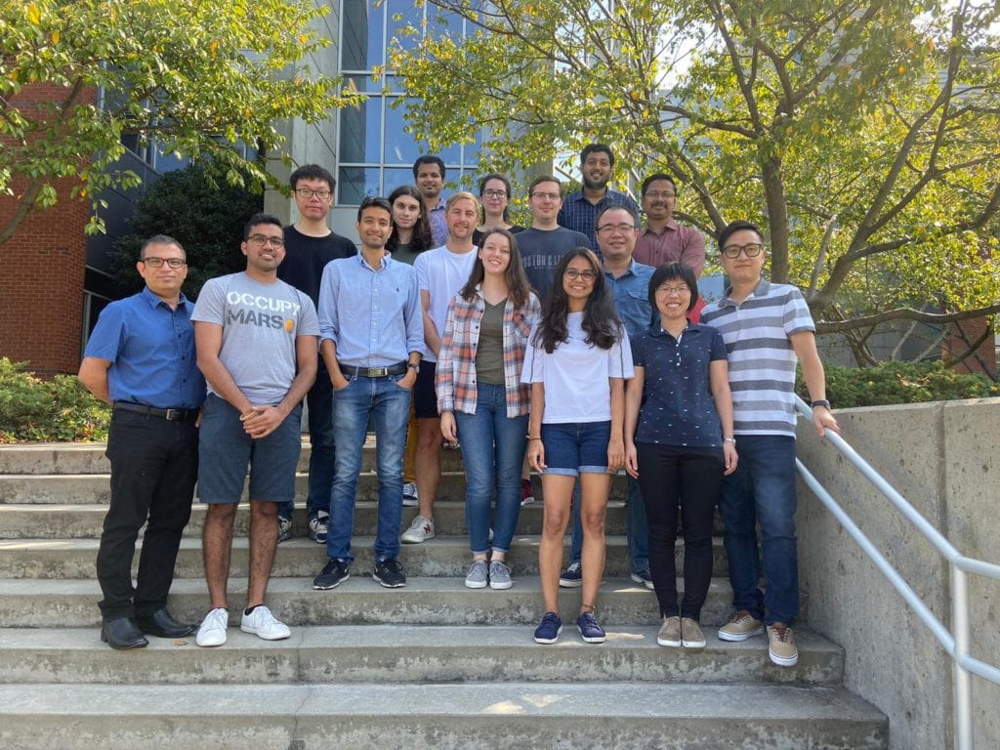

Harikrishna Sahu
Research Scientist II, Georgia Tech, USA
Dr. Sahu joined Georgia Tech as a postdoc in September 2019. Prior to joining Georgia Tech, he was a postdoc fellow at Nanjing University, China. He received his M.Sc. degree in Chemistry at National Institute of Technology Rourkela and a Ph.D. degree in computational chemistry at Indian Institute of Technology Guwahati. His research focuses on developing and applying computational and machine learning tools to accelerate materials discovery.
Notable Contributions
My research mostly contributes to the development of organic materials for next-generation electronic devices.
-
Polymer Structure Predictor
PSP is an autonomous polymer model generator, to build a hierarchy of polymer models, ranging from oligomers to infinite chains to crystals to amorphous models, using simplified molecular-input line-entry system (SMILES) strings of polymers. Being a first of its kind, it will facilitate automation in polymer property prediction and design.
-
Organic Solar Cell
High performing machine learning models are developed to predict the PCE, Voc, Jsc, and FF, using relevant quantum chemical properties of donor/acceptor materials in organic solar cells. This study demonstrates how to design organic materials for a specific photovoltaic application.
-
Conducting Polymer
Conjugated polymers with high electrical conductivity are beneficial for thermoelectrics applications. Machine learning models are established to predict the electrical conductivity of p-doped polymers. Five hundred promising candidates are selected by performing high-throughput virtual screening of 845,000 candidates. New design guidelines are also established.
Ramprasad Group
Currently, I am working as a Research Scientist in the Ramprasad group, Georgia Tech, USA. Professor Ramprasad is an eminent scientist in the field of polymer informatics. Ramprasad Group